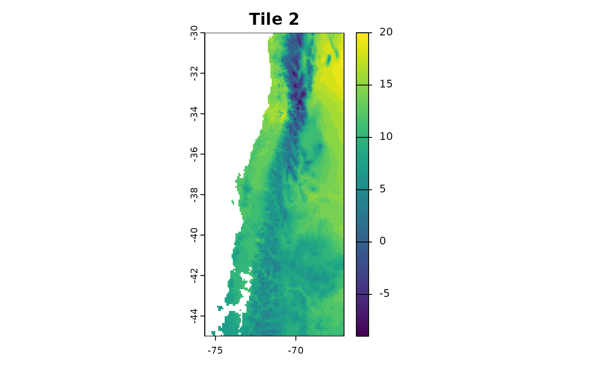
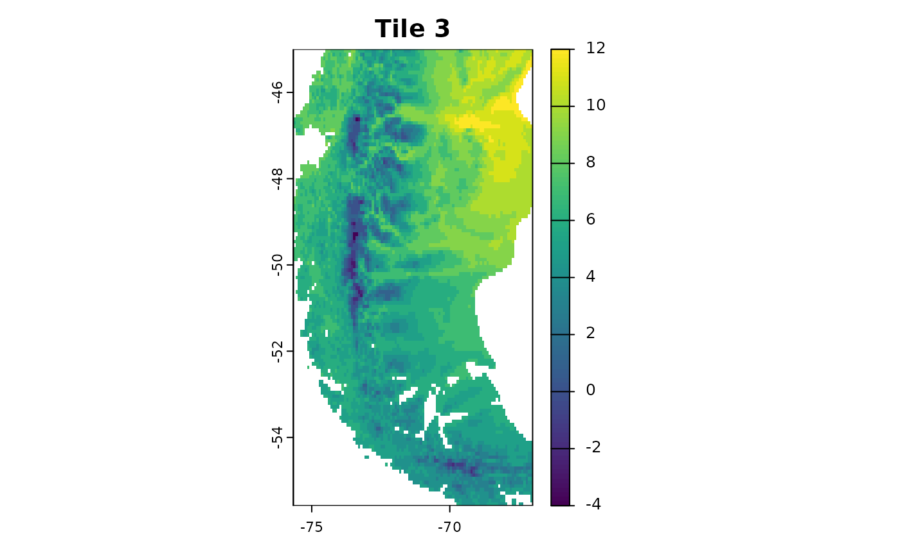
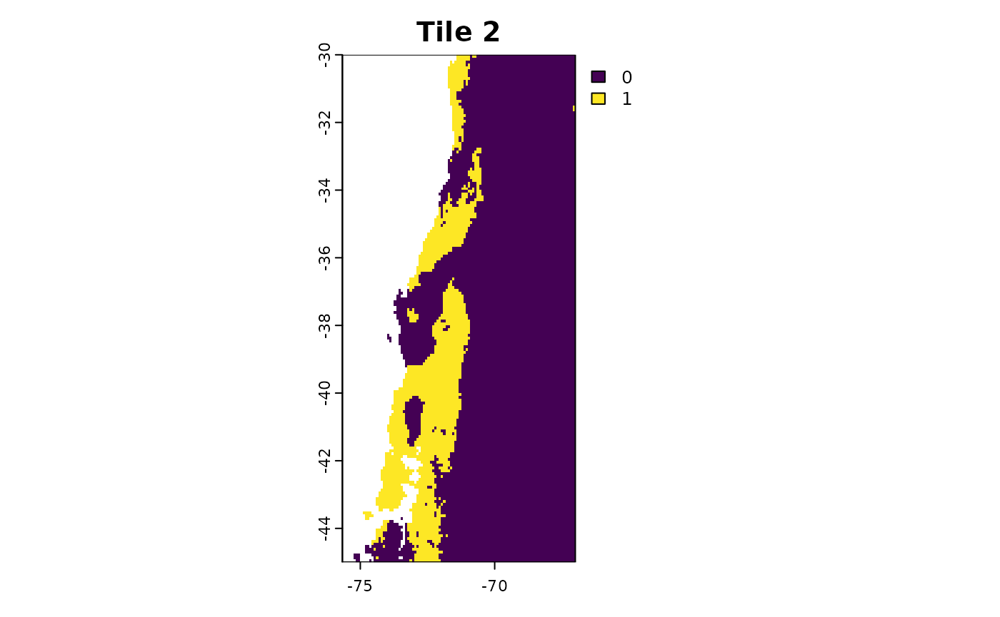

5. Improve computation time of CAST methods
Marvin Ludwig
2026-01-22
Source:vignettes/cast05-parallel.Rmd
cast05-parallel.RmdWorking with machine learning methods and spatial data can be computationally expensive. Especially for larger scale applications like global maps (Ludwig et. al 2024) or high resolution data (e.g. from drones) computation times of CAST methods can be quite long. This vignette goes over various options for efficient spatial modelling workflows and parallelization options in order to speed up computation times of CAST methods.
Forward feature selection
As the forward feature selection basically is a brute force grid
search of the best predictor variable combination, during
ffs a large number of machine learning models are trained
to compare their performance. These model trainings can be run in
parallel. On Unix machines, this is implemented using
mclapply from the parallel-package. Simply set
the cores argument to a value > 1 to use
multiple cores for the model training. On windows machines, you will get
the warning
Parallel computations of ffs only implemented on unix systems. cores is set to 1.
data("splotdata")
spatial_cv = CreateSpacetimeFolds(splotdata, spacevar = "Biome", k = 5)
ctrl <- trainControl(method="cv",index = spatial_cv$index)
ffsmodel <- ffs(predictors = splotdata[,6:16],
response = splotdata$Species_richness,
tuneLength = 1,
method = "rf",
trControl = ctrl,
ntree = 20,
seed = 1,
cores = 4)Regardless of the system, you can speed up the model training in
ffs, as caret::train has a parallelization
option that trains models on multiple cores. The code below is
adapated from https://topepo.github.io/caret/parallel-processing
library(doParallel)
data("splotdata")
spatial_cv = CreateSpacetimeFolds(splotdata, spacevar = "Biome", k = 4)
ctrl <- trainControl(method="cv",index = spatial_cv$index)
cl <- makeCluster(4)
registerDoParallel(cl)
ffsmodel <- ffs(predictors = splotdata[,6:16],
response = splotdata$Species_richness,
tuneLength = 4,
method = "rf",
trControl = ctrl,
ntree = 20,
seed = 1,
cores = 1)
stopCluster(cl)Another option is the use of a different model algorithm. For
example, the ranger package is a fast and multicore
implementation of the random forest model.
ffsmodel <- ffs(predictors = splotdata[,6:16],
response = splotdata$Species_richness,
method = "ranger")Area of applicability
Estimating the Area of Applicability (AOA) can be computationally expansive as the method is based on finding minimum distances and nearest neighbors. We can divide the computation into three major chunks:
- The feature space distance between all training data.
- The nearest feature space distance between training data in different CV folds.
- The distance between new locations (pixel) and the nearest training data in feature space.
(1.) and (2.) are needed to derive the AOA threshold and solely based
on the training data and cross validation configuration. They are
computed together in the trainDI function. (3.) is needed
to calculate the dissimilarity index of the predictor stack in the
aoa function. Under the hood, the aoa function
calls trainDI as it’s first step and then calculates the DI
of the predictor stack.
You can speed up computation times of aoa by splitting
these two processes and calculate the DI on multiple raster tiles at
once.
trainDI
library(CAST)
library(caret)
library(terra)
library(sf)
data("splotdata")
predictors <- rast(system.file("extdata","predictors_chile.tif",package="CAST"))
splotdata <- st_drop_geometry(splotdata)
set.seed(10)
model <- train(splotdata[,names(predictors)],
splotdata$Species_richness,
method="rf",
tuneLength = 1,
importance=TRUE,
ntrees = 20,
trControl = trainControl(method="cv"), number = 5)
prediction <- predict(predictors, model, na.rm=TRUE)Calling trainDI just needs the model object, as this
also contains the training data, cross-validation information and
variable importance. The result of trainDI then contains
all the necessary information from the training data and model that the
aoa function needs to compute the DI for new locations.
## DI of 703 observation
## Predictors: bio_1 bio_4 bio_5 bio_6 bio_8 bio_9 bio_12 bio_13 bio_14 bio_15 elev
##
## AOA Threshold: 0.1903705
class(tdi)## [1] "trainDI"
str(tdi)## List of 10
## $ train :'data.frame': 703 obs. of 11 variables:
## ..$ bio_1 : num [1:703] 17.6 17.4 18.3 18 18.8 ...
## ..$ bio_4 : num [1:703] 464 460 473 486 478 ...
## ..$ bio_5 : num [1:703] 30.5 30.1 31.4 31.2 32 ...
## ..$ bio_6 : num [1:703] 3.6 3.5 4.2 4.2 4.4 ...
## ..$ bio_8 : num [1:703] 23.2 22.9 24 23.9 24.5 ...
## ..$ bio_9 : num [1:703] 11.7 11.5 12.2 11.8 12.6 ...
## ..$ bio_12: num [1:703] 760 731 810 842 853 842 823 525 524 554 ...
## ..$ bio_13: num [1:703] 119 115 129 140 134 133 129 92 90 90 ...
## ..$ bio_14: num [1:703] 9 9 12 13 12 12 12 7 6 5 ...
## ..$ bio_15: num [1:703] 68.9 68.9 66.9 65.5 68.3 ...
## ..$ elev : num [1:703] 416 468 232 129 231 243 193 188 261 468 ...
## $ weight :'data.frame': 1 obs. of 11 variables:
## ..$ bio_1 : num 20.4
## ..$ bio_4 : num 20.3
## ..$ bio_5 : num 14.6
## ..$ bio_6 : num 22.6
## ..$ bio_8 : num 18.5
## ..$ bio_9 : num 15.1
## ..$ bio_12: num 25.9
## ..$ bio_13: num 17.3
## ..$ bio_14: num 18.6
## ..$ bio_15: num 18.2
## ..$ elev : num 14.3
## $ variables : chr [1:11] "bio_1" "bio_4" "bio_5" "bio_6" ...
## $ catvars : chr(0)
## $ scaleparam :List of 4
## ..$ dim : int [1:2] 703 11
## ..$ dimnames :List of 2
## .. ..$ : chr [1:703] "1" "2" "3" "4" ...
## .. ..$ : chr [1:11] "bio_1" "bio_4" "bio_5" "bio_6" ...
## ..$ scaled:center: Named num [1:11] 14.26 171.83 21.77 6.71 14.4 ...
## .. ..- attr(*, "names")= chr [1:11] "bio_1" "bio_4" "bio_5" "bio_6" ...
## ..$ scaled:scale : Named num [1:11] 7.27 156.2 8.2 6.67 8.28 ...
## .. ..- attr(*, "names")= chr [1:11] "bio_1" "bio_4" "bio_5" "bio_6" ...
## $ trainDist_avrg : num [1:703] 87.2 87.2 87.1 86.9 87.6 ...
## $ trainDist_avrgmean: num 81.5
## $ trainDI : num [1:703] 0.0222 0.0173 0.0258 0.0409 0.0115 ...
## $ threshold : Named num 0.19
## ..- attr(*, "names")= chr "75%"
## $ method : chr "L2"
## - attr(*, "class")= chr "trainDI"
# you can save the trainDI object for later application
saveRDS(tdi, "path/to/file")AOA for multiple rasters
If you have a very large area of interest for which you want to
derive the Area of Applicability, computing the AOA for the entire area
at once might not be possible or takes a very long time. You can use a
tile based approach to apply the trainDI object from the
previous step to multiple rasters at once.
r1 = crop(predictors, c(-75.66667, -67, -30, -17.58333))
r2 = crop(predictors, c(-75.66667, -67, -45, -30))
r3 = crop(predictors, c(-75.66667, -67, -55.58333, -45))
plot(r1[[1]],main = "Tile 1")
plot(r2[[1]],main = "Tile 2")
plot(r3[[1]],main = "Tile 3")
Use the trainDI argument in the aoa
function to specify, that you want to use a previously computed trainDI
object.
aoa_r1 = aoa(newdata = r1, trainDI = tdi)
plot(r1[[1]], main = "Tile 1: Predictors")
plot(aoa_r1$DI, main = "Tile 1: DI")
plot(aoa_r1$AOA, main = "Tile 1: AOA")

You can now run the aoa function in parallel on the different tiles!
Of course you can use for favorite parallel backend for this task, here
we use mclapply from the parallel package.
library(parallel)
tiles_aoa = mclapply(list(r1, r2, r3), function(tile){
aoa(newdata = tile, trainDI = tdi)
}, mc.cores = 3)
plot(tiles_aoa[[1]]$AOA, main = "Tile 1")
plot(tiles_aoa[[2]]$AOA, main = "Tile 2")
plot(tiles_aoa[[3]]$AOA, main = "Tile 3")
For even larger tasks it might be useful to save the tiles to you hard-drive and load them one by one to avoid filling up your RAM.
# Simple Example Code for raster tiles on the hard drive
tiles = list.files("path/to/tiles", full.names = TRUE)
tiles_aoa = mclapply(tiles, function(tile){
current = terra::rast(tile)
aoa(newdata = current, trainDI = model_random_trainDI)
}, mc.cores = 3)